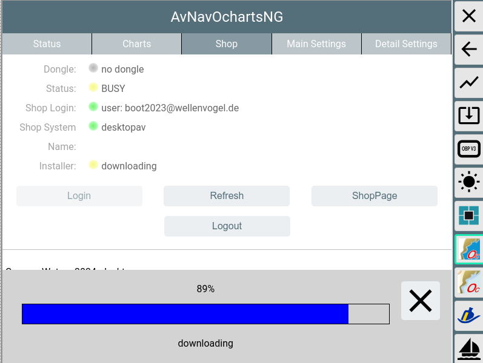
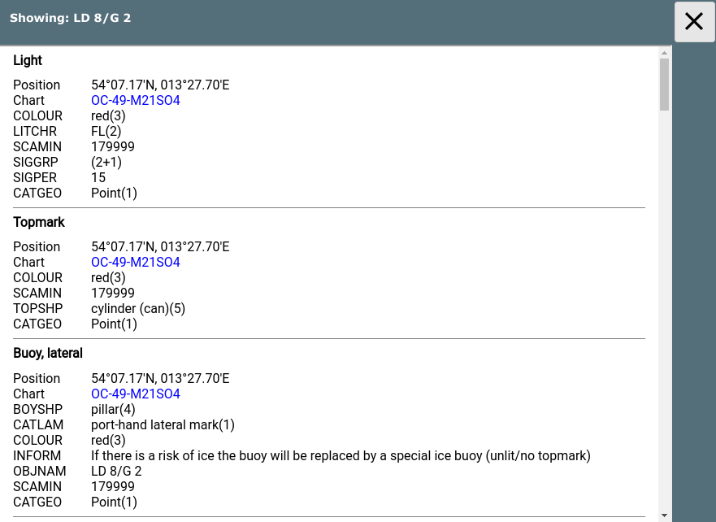

AvNav ochartsng ist eine neue Implementierung als Ersatz für das AvNav
ocharts plugin.
Diese hat eine Reihe von neuen Funktionen:
Momentan ist diese Implementierung im Beta Zustand. Es gibt daher noch einige Einschränkungen und es können auch noch Fehler vorhanden sein.
AvNav kann Karten in verschiedenen Raster-Formaten verarbeiten. Bisher war es aber nicht in der Lage, offiziell verfügbare Seekarten zu lesen und anzuzeigen. Seit einiger Zeit gibt es die Firma o-charts, die Karten für viele Gebiete der Erde für OpenCPN bereitstellt.
Nach einigen Absprachen mit der Firma können diese Karten nun auch für AvNav genutzt werden (ab Version 2024xxx mit diesem neuen plugin - siehe unten).
Bisher können die oesenc Vektor-Karten genutzt werden.
Ausserdem kann das Plugin freie S57 Karten nutzen (nach Konvertierung).
Die Umwandlung in die für AvNav notwendigen Raster-Karten erfolgt dabei im laufenden Betrieb immer dann, wenn die Karten dargestellt werden sollen. Ein gewisser Teil der Kartenkacheln wird im Server im Speicher aufbewahrt, so das diese sehr schnell erneut bereitgestellt werden können. Das beschleunigt die Anzeige, wenn man zwischen verschiedenen Zoom Stufen wechselt oder mehrere Displays angeschlossen sind.
Das Handling der Karten erfolgt dabei vollständig durch das Plugin - das
betrifft auch die Installation (die Karten können nicht über die normale Download-Seite hochgeladen
werden). Das Plugin hat dazu eine eigene GUI, die von der Hauptseite über
den Button  (User
Apps) und dort über den Button OchartsNG erreichbar ist.
(User
Apps) und dort über den Button OchartsNG erreichbar ist.

AvNav ochartsng kann die o-chart Vektorkarten darstellen (oeusenc) - so
wie in diesem Dokument beschrieben.
Ausserdem können unverschlüsselte Vektorkarten (S57) benutzt werden. Diese
sind für verschiedene Regionen frei zum Download verfügbar.
Um solche S57 Karten nutzen zu können, müssen sie zunächst in das genutzte
OpenCPN SENC Format umgewandelt werden.
Für eine Anleitung zur Konvertierung siehe Karten
Konvertierungen.
Wichtiger Hinweis: Wenn man keinen Dongle von o-charts hat, sind die Karten an das System gebunden. Wenn es daher beim Einbringen oder bei der Nutzung der Karten Probleme gibt, bitte nicht das System neu aufsetzen - sondern eine Reparatur versuchen. Wenn man das System neu aufsetzt, werden u.U. die Lizenzen ungültig. Ich helfe gerne bei Problemen - Kontakt z.B. per email.
Nur bei Nutzung der AvNav Images ist auch ein update der Images möglich. Bitte im Zweifel vorher testen.
Um bei ocharts Karten kaufen zu können, muss dort zunächst ein Konto angelegt werden.Für den gesamten Prozeß gibt es zwei Wege - den "Online
Proceß " und den "Offline
Prozeß" .
Der online Prozeß erfordert, das das System (auf dem der AvNav Server
läuft - das muss nicht das System sein, auf dem der Browser läuft) mit dem
Internet verbunden ist.
Für Android ist die Registrierung eines neuen Systems nur über den online
Prozeß möglich.
Für Updates werden die Schritte 4,5 und 6 wiederholt (bei 4 nur Anforderung des Updates).
Für weitere Kartensätze Schritte 3-6.
Für die Schritte 2,3,4 und 5 wird natürlich ein System mit Internet-Verbindung benötigt. Das kann z.B. ein Laptop oder auch ein Android Tablet sein.Wichtiger Hinweis für Android: Die Registrierung eines Systems (Schritte 1 und 2) können nur im Online Prozeß erledigt werden.
Für den Ablauf des Offline-Prozesses habe ich ein Video gemacht, um ihn zu verdeutlichen. Hier noch einmal eine kurze Beschreibung dazu.
Hinweis: Wenn die Karten auf dem gleichen System bereits für OpenCPN registriert sind, dann kann man direkt mit Schritt 6 starten (aber nicht für Android - siehe die Einschränkungen oben).
Über  -> auf die Oberfläche des
Plugins gehen, dort den Tab "Charts" auswählen.
-> auf die Oberfläche des
Plugins gehen, dort den Tab "Charts" auswählen.

Mit "Get Fingerprint" die Erzeugung des Fingerprints anstossen. Falls man einen Dongle von o-charts benutzt, den Fingerprint über "Get Fingerprint(Dongle)" erzeugen. Dieser wird nur sichtbar, wenn ein dongle erkannt wurde (Dongle Zeile grün).
Im Dialog die erzeugte Datei auf meinem Gerät speichern.
Auf die o-charts Seite gehen und den Fingerprint hochladen.

Mit Choose File die unter 2. gespeicherte Datei wählen. Dazu einen sinnvollen Namen vergeben (dieser findet sich später in den Mails mit den Download Links).
Bei o-charts aus den verfügbaren oeSENC Karten die gewünschten kaufen.

Bei 1 kann die Zuordnung zu einem angelegten System erfolgen (hier nicht mehr möglich, weil die Karten bereits zu den 2 maximal verfügbaren Systemen zugeordnet sind). Bei 2 wird dann die Mail mit dem Download-Link angefordert (das erfolgt auch bei Updates - hier im Bild zu sehen: Die letzte abgerufene Version ist 21, verfügbar ist 23).

Nach kurzer Zeit erhält man von o-charts eine Mail mit dem Download-Link. Diese Datei (zip) herunterladen.

Am Ende des Uploads wird auf dem AvNav Server die Datei ausgepackt, und es werden einige Prüfungen durchgeführt (das kann einige Sekunden dauern).
Die Karten werden (falls nicht anders konfiguriert) in das Verzeichnis /home/pi/avnav/data/ocharts/charts hochgeladen.
Wenn die neu hochgeladenen Karten ein Update für einen bereits existierenden Kartensatz enthalten, wird der existierende Satz deaktiviert. Das kann man später mit Enable/Disable/Auto ändern. Kartensätze, die nicht mehr benötigt werden, können gelöscht werden.
Wichtiger Hinweis: Die Karten stehen auf der o-charts Seite nur während ihres Gültigkeitszeiraumes (1 Jahr) zum Download bereit. Daher sollte die zip Datei noch einmal sicher aufbewahrt werden. Man kann diese auch zu AvNav hochladen und nutzen, wenn dieser Gültigkeitszeitraum abgelaufen ist. Man hat dann natürlich keine Updates mehr.
Wenn alle Karten erfolgreich eingelesen wurden, wird der Status sich zu grün ändern (READY).
Falls der Status zu "ERROR" (rot) wird, wurde u.U. ein Zip-File hochgeladen, was für ein anderes System zugeordnet war. Details kann man im Log File (/home/pi/avnav/data/ocharts/provider.log) sehen.

Damit man den Online Prozeß nutzen kann, muss das System, auf dem AvNav läuft(der Server, nicht der Browser!) mit dem Internet verbunden sein.
Der Prozeß erlaubt es, ein System zu registrieren, zu prüfen, ob das
aktuelle System im Shop bekannt ist und sich die Karten, die diesem System
zugeordnet wurden anzeigen zu lassen. Man kann diese dann direkt
herunterladen und installieren.
Das eigentliche Kaufen der Karten und die Zuordnung zum System muss über
die o-charts Webseite vorgenommen werden. In der ochartsng Weboberfläche
ist ein Link-Button vorhanden, der einen direkt dort hin bringt.
AvNav ochartsng speichert keine Login-Daten für den Shop. Da aber die
Applikation im Browser läuft, können die Login Daten dort gespeichert
werden (wie für jede andere Webseite).
Sicherheitshinweis: Die Kommunikation zwischen AvNav ochartsng und dem o-charts Shop ist verschlüsselt. Die Kommunikation zwischen dem Browser und dem AvNav Server aber nicht. Daher darf der Online Prozeß nur verwendet werden, wenn man sich in einem sicheren WLAN befindet (z.B. hinter einem LTE Router oder einem mobilen Hotspot) - niemals aber direkt in einem öffentlichen WLAN wenn der Browser und der Server nicht auf dem gleichen Rechner laufen.

Wenn man den "Shop" Reiter öffnet ist man zunächst nicht im Shop eingelogged. Man kann sehen, ob momentan ein Dongle aktiv ist oder nicht. Über den "ShopPage" Button gelangt man direkt zur o-charts Webseite (aber es macht mehr Sinn, sich zunächst einzuloggen).
Mit einem Klick auf "Login" und eingabe von Nutzername und Passwort logged man sich im o-charts Shop ein.

Wenn das System bereits im Shop registriert wurde, wird der "Shop name"
(d.h. der dort genutzte Name für das System) angezeigt und die Liste der
Karten/Updates die dem System zugeordnet wurden(siehe Offline
Prozeß) wird angezeigt.
Wenn eine Version einer Karte im Shop neuer ist als die lokale (oder eine
Karten lokal noch nicht vorhanden ist) kann man sie direkt installieren.


Nach dem Herunterladen wird die Karten entpackt und kann sofort genutzt werden. Wenn es ein update für eine existierende Karte ist, wird die neue Version aktiv und die alte wird "disabled" (gleiches Verhalten wie beim Hochladen einer Karte). Auf dem "Charts" Reiter kann man später die alte Version löschen, wenn man sie nicht mehr benötigt.
Wichtiger Hinweis:
Die Karten im Shop bleiben nur während ihrer Gültigkeitsdauer (1 Jahr)
verfügbar. Bitte daher die Karten noch einmal lokal sicher aufbewahren.
Das kann man entweder durch Anforderung auf der Shop-Webseite tun (wie im
Offline Prozeß) oder man kann die ZIP Datei direkt vom "Charts" Reiter
herunterladen.
Wenn das System im Shop noch nicht bekannt ist, kann man es hier registrieren.

Wenn man das System registriert hat, kann man über "ShopPage" direkt zur Shop Webseite gehen und Karten kaufen bzw. zuordnen. Wenn man von dort zurückkehrt muss man über "Refresh" die Liste der zugeordneten Karten aktualisieren.
Da die O-charts Karten als Vektorkarten vorhanden sind, kann in weiten Bereichen das Aussehen der Karten angepasst werden. Dabei sind allerdings einige Einschränkungen zu beachten:
Die Veränderung der Parameter erfolgt über die Oberfläche des Plugins( ->), Reiter "Main Settings".
->), Reiter "Main Settings".
 Wenn eine Einstellung
geändert wird (1) wird der Parameter fett dargestellt. Die Änderungen werden
erst wirksam, wenn "Update Settings"(2) angeklickt wird.
Wenn eine Einstellung
geändert wird (1) wird der Parameter fett dargestellt. Die Änderungen werden
erst wirksam, wenn "Update Settings"(2) angeklickt wird.
Mit Cancel können die Änderungen zurückgenommen werden, Defaults setzt die Einstellungen auf Default-Werte. Die Parameter entsprechen weitgehend den bei OpenCPN vorhandenen Settings.
Die folgende Tabelle listet die Einstellungen.| Name | Bedeutung | Default |
| Show Text | Zeige Texte zu den Objekten auf der Karte | an |
| Important Text Only | Verberge weniger wichtige Texte | aus |
| Light Descriptions | Beschreibungen für Feuer | an |
| Show Depths | Zeige Tiefen Werte | an |
| Show Quality | Zeige extra Objekte für die Karten-Qualität | aus |
| Chart Information Objects | spezielle Objekte auf der Karte | an |
| Buoy/Light Labels | Bezeichnungen für Feuer/Tonnen | an |
| National text on chart | Nationale Texte | an |
| Show Lights | Zeige Feuer | an |
| Show Anchor Info | Zeige Informationen über den Ankergrund | an |
| Color Scheme | Das Farbschema für die Darstellung | DAY_BRIGHT |
| Chart Bounds | Zeige die Ränder der Karten | an |
| Reduced Detail at Small Scale | Reduziere die Details auf geringeren Zoom-Leveln | an |
| De-Cluttered Text | Bessere Anordnung der Texte | an |
| Display Category | Art der Darstellung (Base, Standard, All, User Standard) | Standard |
| Graphics Style | Grafische Darstellung (Paper Chart, Simplified) | Paper Chart |
| Boundaries | Art der Begrenzungen(Plain, Symbolized) | Plain |
| Colors | 4Color, 2 Color | 4 Color |
| Text Font Size | Skalierung für die Text-Grösse | 1 (ca. 12px) |
| Soundings Font Size | Skalierung für die Tiefen-Angaben | 1 (ca. 12px) |
| Scale | Basis Skalierung. Höhere Werte sorgen für mehr Details auf kleineren Zoom-Stufen | 1 |
| UnderZoom | Anzahl der Zoom Stufen, die eine höher aufgelöste Karte verkleinert wird, wenn auf dem gewünschten Level keine Karte vorhanden ist | 4 |
| AreaUnder | Wenn im Bereich "UnderZoom" immer noch keine Karte für den Bereich
gefunden wurde, benutzte weitere (höhere) zoom level. Für diese
Karten werden dann nur If with in the under zoom range still no
charts have been found, just try some lower zoom layers - but only
display the areas (land, depth) - no other information. Be careful when increasing this as this could impact the performance a lot. |
2 |
| OverZoom | Anzahl der Zoom Stufen, die eine niedriger aufgelöste Karte
vergrößert wird,wenn es keine besser aufgelöste Karte gibt. Hinweis: UnderZoom,AreaUnder und OverZoom bestimmen massgeblich, wie aufwendig der Render-Vorgang ist, d.h. wieviele Karten an der Erzeugung einer Kachel beteiligt werden müssen. Kleinere Werte führen zu weniger Karten (schneller) können aber in bestimmten Bereichen zu weissen Flächen zwischen Karten-Teilen führen. Die Defaults sollten ein guter Kompromiss sein. |
4 |
| Scale Tolerance | Wenn die Symbole in unterschiedlichen Größen benötigt werden oder die Karte skaliert wird, müssen jeweils neue Symbole intern berechnet werden. MIt einer Toleranz kann man die Anzahl dieser Neuberechnungen etwas verringern. | 0.1 |
| Rotation Tolerance | Auf der Karte werden viele Objekte (insbesondere auch Linien) in verschiedenen Rotations-Winkeln benötigt. Um die Zahl der zu erzeugenden Objekte zu verringern, macht eine gewisse Toleranz für den Winkel Sinn. | 2 |
| SymbolScale | Skalierung der Symbolgrößen. Da einige Symbole auf Raster-Bildern basieren, ist eine Skalierung > 2 meist nicht sinnvoll. | 1 |
| Depth | Einheit für die Tiefen-Angaben (Meters, Feet, Fathoms) | Meters |
| Shallow Depth | Tiefe für Flachwasser | 2 |
| Safety Depth | Tiefe für Sicherheits-Kontur | 3 |
| Deep Depth | Tiefe für Tiefwasser | 5 |
Unter dem Tab "Detail Settings" können gezielt einzelne Karten-Features an- oder abgeschaltet werden. Diese Einstellungen werden nur im Anzeige-Modus "User Standard" wirksam.
Wenn man auf die Karte klickt, bekommt man die "Feature Info" von AvNav. Diese wird angereichert um wichtige Informationen (Tonne, Feuer) in der Nähe des Klick-Punktes.

Über "Info" können die Roh-Informationen der Karten angezeigt werden.

Mit einem Klick auf den (blauen) Karten-Namen bekommt man einige weitere Informationen zur Karte.
Das Plugin ist als debian Paket vorhanden.
Da es sich momentan noch im Beta-Status befindet, ist es noch nicht in den
normalen Repositories(Verzeichnissen) vorhanden.
Für die AvNav Images bekommt man
die Pakete im "beta" Verzeichnis. Um dieses zu aktivieren kann man die
Datei /etc/apt/sources.list.d/extra.list bearbeiten und das beta
Verzeichnis aktivieren.
Kommando:
Einfach das # in der debpreview Zeile entfernen. Anschliessend kann man die Pakete mit dem avnav-updater installieren:
Wenn man es direkt von der Kommandozeile machen möchte, kann man das mit den folgenden Kommandos tun:
Falls man mit anderen Images arbeitet, sollte man das Verzeichnis von free-x einrichten ("bullseye" an die eigene Debian Version anpassen):
Siehe die AvNav Paket-Installationsbeschreibung.
Alternativ kann man die Pakete auch aus dem daily builds Verzeichnis herunterladen und installieren.
Das kann man z.B. mit den folgenden Kommandos tun (die Version durch die gewünschte ersetzen):
Man kann natürlich auch die Pakete zunächst auf einen PC herunterladen und sie von dort z.B. mit WinSCP auf den Raspberry Pi übertragen und dann dort installieren.
Wenn man das neue ochartsng Plugin installiert wird es einen Konflikt mit
dem bisherigen ocharts Plugin geben. Sie versuchen beide, den gleichen
Port (8082) zu benutzen, eines von beiden wird daher nicht starten.
Die vorgeschlagene Lösung ist, das alte Plugin auf der  server/status
Seite zu disablen.
server/status
Seite zu disablen.
Zusätzlich kann man im neuen Plugin den Schalter "useLegacy" aktivieren
(in der Plugin Konfiguration). Mit diesem
Schalter aktiviert benutzt das neue Plugin auch alle Karten, die vorher
mit dem alten installiert wurden.
Wenn man beide Plugins parallel nutzen möchte, muss man z.B. beim neuen Plugin den Port ändern (beispielsweise auf 8083). Um beide gemeinsam laufen zu lassen, sollte das System über ausreichend RAM verfügen (2GB).
Für Android git es eine eigene App die ochartsng enthält. Diese muss separat installiert werden.
Siehe AndroidApp weiter unten..
Alle Releases und alle Beta-Versionen (Entwickler Versionen oder daily builds) findet man unter:
-- bisher keine --
Der Zugriff auf die Karten innerhalb von AvNav ist nur aus dem lokalen Netz möglich, maximal können 5 Geräte (Clients) gleichzeitig die o-charts von einem AvNav Server nutzen.
Für die Software-Lizenzen siehe die Readme.Nur unter Linux. Für Android siehe Android/Settings.
Einige Einstellungen für das Plugin können auf der server/status Seite  unter "plugins/system-ochartsng" geändert werden.
unter "plugins/system-ochartsng" geändert werden.
Those are:
| Name | Bedeutung | Default |
| port | Http port | 8082 |
| debug | Level für das Logging, 0-ERROR,1-INFO,2-DEBUG | 1 |
| memPercent | Der prozentuale Anteil des Systemspeichers, den der Provider
maximal nutzen soll. Wenn man diesen nicht setzt (oder zu klein)
berechnet der Provider intern einen Minimalwert und nutzt diesen. Der kann u.U. insbesondere bei der Nutzung von Rasterkarten sehr klein sein und ihn damit zwingen ständig Karten-Dateien zu öffnen und zu schliessen - was die Geschwindigkeit stark reduzieren kann. Wenn man ausreichend Speicher hat (z.B. > 2GB), wird das Arbeiten beschleunigt, wenn man den Speicher auf 1GB setzt. |
50 |
| tileCachekb | Speicher in KB für die Speicherung von bereits erzeugten Karten-Kacheln (mit 0 erfolgt keine interne Speicherung) | 40960 |
| useLegacy | Nutze auch die Karten, die mit dem alten avnav-ocharts-plugin installiert wurden. | aus |
AvNav OchartsNG steht auch für Android zur Verfügung und stellt die
Karten für die AvNav Android App
bereit.
Dazu gibt es die separate Android App "avocharts".
Im Moment ist die App noch nicht im google play store vorhanden, da sie ja noch im Beta Stadium ist. Man muss sie daher aus dem daily builds Verzeichnis herunterladen und auf dem Gerät installieren (Dazu muss man ggf. die Installation aus externen Quellen erlauben).

Wenn man die App startet kann man zunächst einige Einstellungen anpassen.
Wenn man diese Bild sieht (Status rot) läuft der eigentliche Karten-Server
noch nicht. Dieser wird erst durch Klick auf "Start" gestartet.
Später wird es normalerweise nicht mehr
nötig sein, die avocharts App separat zu starten. Das wird automatisch
erfolgen, sobald AvNav startet. Aber mit einem direkten Start kann man
unter Umständen Fehler erkennen, indem man die Ausgabe ("OUT") oder die
Logdatei ("LOG") anschaut.
Bitte beachten: Der automatische Start funktioniert nur bei Apps
vom gleichen Typ - d.h. eine AvNav release App kann nur eine avocharts
release App starten, eine AvNav beta app eine avocharts beta.
Wenn man also die avocharts beta installiert und mit AvNav (release - aus
dem Store) nutzen möchte, muss man avocharts per Hand starten und auch
noch einmal auf "START" klicken.
Um Einstellungen anzupassen kann man auf die angezeigten Einstellungen oder auf das Einstellungssymbol (oben rechts) klicken.

| Name | Bedeutung | Default |
| Port | Der HTTP Port, den der Karten-Server nutzen wird. Wenn man bei Start Fehlermeldungen bekommt und unter "OUT" so etwas wie "address already in use" sieht, muss man diesen Port ändern. | 8082 |
| LogLevel | 0 - errors, 1- info, 2- debug | 1 |
| Shutdown | Teit (in Sekunden) die der Karten-Server auf ein Signal von AvNav (Heartbeat) warten, bevor er automatisch stoppt(das ist nur aktive, wenn avocharts automatisch durch AvNav gestartet wurde) | 30 |
| Memory | Erlaubte Speichernutzung (%) vom System Speicher (RAM) | 50 |
| Testmode | für interne Tests | aus |
| Use alt key | Siehe unten Hinweise über Release/Beta Versionen | |
| Disk symbol (upper right) | Key specihern (Siehe unten Hinweise über Release/Beta Versionen) |
Wenn man die Einstellungen fertig angepasst hat, geht man mit dem Pfeil zurück wieder auf die Hauptseite.
Man kann nun den Karten-Server mit "START" loslaufen lassen.
Wenn der Server läuft, wird das in der Benachrichtigungszeile angezeigt. Wenn der Start nicht erfolgreich ist (Status wird wieder rot) kann man in die Ausgabe ("OUT") und in das Log ("LOG") schauen.
Ein Klick auf "APP" öffnet ein Browser-Fenster mit der ochartsng Seite - die gleiche Ansicht, die man auch aus AvNav heraus bekommt.

Man kann jetzt z.B. das System im o-charts Shop registrieren (unter Android geht das nur mit dem Online Process).
Bedingt durch die Arbeitsweise des o-charts Lizenz-Servers kann man
Karten, die man z.B. in der Beta-Version gekauft hat, nicht in der Release
Version verwenden (und umgekehrt).
Um das zu vermeiden, kann man die benötigte Lizenz-Information (Key) aus
der App exportieren und in der anderen Version wieder imprtieren. Hinweis:
Man kann die Lizenz trotzdem nur auf dem jeweiligen Gerät nutzen!
Um den Key zu exportieren, klickt man auf der Einstellungsseite oben
rechts auf das Disketten-Symbol und speichert ihn (bitte auch an ein
backup denken, ohne diesen Key kann man später in der anderen App-Version
die Karten nicht mehr nutzen). Wenn man später die andere Version der App
nutzt, dann aktiviert man dort "use alternate key", klickt auf den
alternate key und findet dort einen "Import" Button.
Man kann leicht prüfen, ob man die korrekte Lizenz hat, indem man sich im
Shop anmeldet und prüft, ob das System korrekt erkannt wird - siehe Online
Prozeß.
Bitte auch die Hinweise zum automatischen Start beachten.
Die Karten werden durch einen Server (eigenes Programm) bereitgestellt.
Die Kommunikation mit AvNav wird durch ein AvNav Plugin
unter Linux realisiert und durch die avocharts App auf Android.
Die Web-Oberfläche ist eine Reactjs App und wird auch durch den Server bereitgestellt. In AvNav ist sie als User App integriert.
Der komplette Code findet sich auf GitHub.
Die Installation erfolgt (unter Linux) in /usr/lib/avnav/plugins/ochartsng. Das Daten-Verzeichnis ist /home/pi/avnav/data/ochartsng. Man kann einige weitere Parameter für das plugin direkt in der avnav_server.xml setzen. Das sollte im Normalfall aber nicht nötig sein.
Man kann z.B. das Daten-Verzeichnis setzen.
Unverschlüsselte Vektor Karten wie S57 müssen vor der Benutzung in das
verwendete interne "SENC" Format konvertiert werden.
Dafür gibt es 2 Optionen:
Das avnav-ochartsng-plugin fügt einen Konverter zu AvNav's Importer
hinzu. Dieser Konverter enthält ein Python Script um S57 in ein zip Archiv
umzuwandeln, was hochgeladen werden kann.
Um die S57 Karten zu nutzen, kann man einfach ein zip mit den S57 Karten
zu AvNav's Importer hochladen,
nachdem ochartsng installiert wurde.
Wenn man AvNav und ochartsng unter Linux nutzt, werden die Karten
automatisch in ochartsng verfügbar, wenn die Konvertierung abgeschlossen
wurde.
Wenn man ochartsng auf einem anderen System nutzen möchte (z.B. Android) brauchtman zusätzlich eine Installation von AvNav unter Linux oder unter Windows.
Ochartsng selbst ist nicht unter Windows lauffähig, aber der Konverter steht auch für Windows zur Verfügung. Nachdem man AvNav für Windows installiert hat muss man dort den "Update" Dialog aktivieren und die URL für den ochartsng-s57 Konverter für Windows angeben:
Danach lädt man die S57 Karten zum Konverter hoch und nachdem die Konvertierung abgeschlossen wurde lädt man die zip Datei mit den konvertieren Karten herunter. Diese .zip Datei kann dann direkt in ochartsng installiert werden (Linux und Android).
Wenn man bereits einen Computer mit OpenCPN hat, kann man dort die Karten
konvertieren.
Dafür aktiviert man die Karten in OpenCPN. In den OpenCPN
Einstellungen/Reiter "chart files" klickt man auf "Prepare all ENC
Charts".
Das erzeugt eine Reihe von Dateien mit der Endung .s57 im OpenCPN Verzeichznis (unter Linux: ~/.opencpn/SENC). Aus diesem Verzeichnis kopiert man alle Dateien mit den gleichen Namen wie die S57 Dateien in ein neues, leeres Verzeichnis. Dieses sollte einen "sprechenden" Namen haben - der wird später angezeigt. Anschliessend erzeugt man eine Textdatei "Chartinfo.txt" in diesem Verzeichnis mit genau einer Zeile Text:
ChartInfo: -hier der name der Karte-
Dann erzeugt man ein zip Archive in dem das Kartenverzeichnis als
Unterverzeichnis enthalten ist. Dieses Archive kann man dann zu AvNav
ochartsng hochladen.
Für Linux gibt es ein script
um das Einsammeln der Karten zu automatisieren.